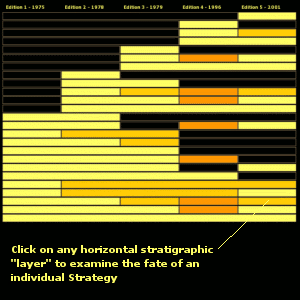

Oblique Stratigraphy
Oblique Stratigraphy is a description of a way of graphically representating the "life cycle" of various cards in the Oblique Strategies decks over the course of various editions.
In the Obliquely Stratigraphic record, you'll find three colors which represent
- Strategies which appear for the first time in an edition of the decks *or* were reintroduced to a later edition after having been removed/modified
- Strategies as they were revised by Brian Eno or Peter Schmidt in a later version of the deck
- Revisions and "translations into American English" which appear in the 1996 edition of the Strategies (a collaborative undertaking between Brian Eno, Peter Norton, and the Berlitz translators).
The Stratigraphic record is organized with the first and most persistent collection of aphorisms (which the earlier version of the True History or the Oblique Strategy referred to as "the Core Strategies") located at the bottom of the diagram. Each successive version of the five editions of the Oblique Strategies are listed from left to right, as shown:

As one traverses the stratigraphic record, you should be able to get a feel for the additions, alterations, and deletions which have occurred to each of the individual aphorisms.
I am very grateful to Brian Clayton [who was kind enough to remind me that this website is ten years old], whose birthday present to the Oblique Strategies website is a loving [and absolutely correct] update to these pages.
Click here to view the Obliquely Stratigraphic record.